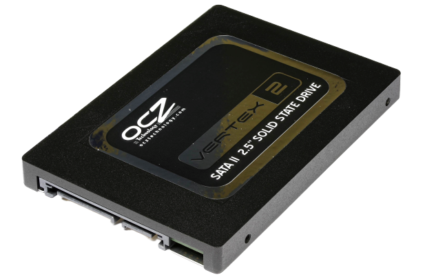

Разновидности
В современной технике используется огромное количество разновидностей Flash-памяти и SSD:
ATA Flash
Первыми накопителями на флэш-памяти, появившимися рынке, были карты ATA Flash. Эти накопители изготавливаются в виде стандартных карт PC Card. Помимо микросхем флэш-памяти в них устанавливается АТА-контроллер, и при работе они эмулируют обычный IDE-диск. Интерфейс этих карт параллельный. Карты ATA Flash не получили широкого распространения и в настоящее время используются крайне редко.
Compact Flash
Карты Compact Flash (CF) были предложены компанией SanDisk в качестве более компактной и удобной в работе альтернативы картам ATA Flash . Поэтому разработчики стандарта CF предусмотрели возможность работы этих карт как устройств PC Card или как IDE-устройств. В первом случае карты работают как обычные PC Card устройства и их интерфейс «превращается» в шину PC Card . Во втором — как жесткие IDE-диски и их интерфейс работает как АТА-шина.
Карты CF впервые появились в 1994 г. Все карты этого типа имеют 50-контактный параллельный интерфейс. Кстати, существуют карты CF двух типов — Туре I и Туре II. Карты типа Туре II на два миллиметра толще и появились только потому, что раньше корпуса карт Туре I не позволяли разместить внутри флэш-память большого объема для изготовления вместительных носителей CF. В настоящее время такой необходимости нет и карты Туре II постепенно уходят с рынка. Отметим, что в накопители для карт Туре II можно устанавливать карты Туре I, тогда как обратное невозможно.
Среди флэш-карт бесспорным лидером по производительности была CF-карта Transcend Ultra Performance 25x CompactFlash 256 Мбайт, которую можно по праву считать эталоном скорострельности современных флэш-накопителей. Скорость последовательной/случайной записи у этой флэш-карты достигает 3.6/0.8 Мбайт/с, скорость чтения - 4,0/3,7 Мбайт/с.
Если сравнивать CF-карты с накопителями других типов, то окажется, что флэш-память — совсем на такая медленная, как это принято считать! По скорости последовательной записи флэш-память обгоняет диски CD-RW в 2 раза, по скорости последовательного чтения — на 10%! Флэш-память выигрывает у дисков по скорости последовательной записи — в 2 раза — и случайного чтения — на 10%, однако отстает по скорости последовательного чтения и случайной записи — на 20%. Флэш-память отстает по скорости последовательной записи от DVD-дисков — в 1,4 раза.
SmartMedia
Конструкция карт SmartMedia (SM) чрезвычайно проста. В карте SM нет встроенного контроллера интерфейса и по сути — это одна или две микросхемы флэш-памяти, «упакованные» в пластиковый кожух. Стандарт SM был разработан компаниями Toshiba и Samsung в 1995 г. Интерфейс карт SM — параллельный, 22-контактный, но из них для передачи данных используется только восемь линий.
MultiMedia Card
Карты Multi-Media Card (MMC) имеют 7-контактный последовательный интерфейс, который может работать на частоте до 20 МГц. Внутри пластикового корпуса карты размещается микросхема флэш-памяти и контроллер ММС-интерфейса. Стандарт ММС предложен в 1997 г. компаниями Hitachi, SanDisk и Siemens.
SecureDigital Card
SecureDigital Card (SD) был разработан в 2000 г. компаниями Matsushita, SanDisk и Toshiba. Фактически SD — это дальнейшее развитие стандарта ММС, поэтому карты ММС можно устанавливать в накопители SD (обратное будет неверным). Интерфейс SD — 9-контактный, последовательно-параллельный (данные могут передаваться по одной, двум или четырем линиям одновременно), работает на частоте до 25 МГц. Карты SD оснащаются переключателем для защиты их содержимого от записи (стандартом также предусмотрена модификация без такого переключателя).
Memory Stick
Стандарт флэш-карт с 10-контактным последовательным интерфейсом, работающим на частоте до 20 МГц, и переключателем для защиты от записи. Memory Stick (MS) активно продвигается на рынок компанией Sony, которая предложила его в 1998 г.
USB-флэш-память
USB-флэш-память (USB-память) — совершенно новый тип носителей на флэш-памяти, появившийся на рынке в 2001 г. По форме USB-память напоминает брелок продолговатой формы, состоящий из двух половинок — защитного колпачка и собственно накопителя с USB-разъемом (внутри него размещаются одна или две микросхемы флэш-памяти и USB-контроллер).
Работать с USB-памятью очень удобно — для этого не требуется никаких дополнительных устройств. Достаточно иметь под рукой ПК п с незанятым USB-портом, чтобы за пару минут «добраться» до содержимого этого накопителя.
Разработчики флэш-памяти в первую очередь стремились увеличить скорость последовательной записи, поскольку флэш-память изначально предназначена для использования в цифровых фотокамерах, где прежде всего важен этот показатель.
SSD

Проблема медленной работы жестких дисков существует давно, и тем более странно, что развитие в этой сфере долгое время шло в основном в направлении увеличения их объема. Скорость линейного (последовательного) чтения, конечно, десятикратно возросла в отдельных моделях — от 30–40 Мб/сек в 2000 году до 450 Мб/сек и более на сегодняшний день. Но вот при загрузке и работе программ необходимо читать и записывать несколько сотен файлов, находящихся в разных местах диска. Для этого в традиционном «винчестере» требуется механическое перемещение головок, которое занимает столько же времени, сколько и десяток лет назад. Исключительно по этой причине реальная скорость обмена данными с диском снижается в некоторых случаях до нескольких Мб/сек.
SSD, в свою очередь, значительно отличается от HDD. Работа с большим количеством блоков или маленьких файлов идет одновременно, поскольку у SSD нет механических головок, требующих перемещения, и не нужно ждать оборота диска, как на виниловой пластинке, перед каждым доступом к информации. Только из-за этого количество операций ввода-вывода может быть на порядок выше, чем у обычного жесткого диска. На практике это существенно сказывается, например, на скорости загрузки компьютера.
И это не все преимущества SSD-диска. В отличие от HDD, задержки на действия пользователя при практической работе почти полностью отсутствуют, скорость загрузки увеличивается в среднем в 5–10 раз. Условно, если раньше приходилось ждать до 2 секунд, то теперь отклик дисковой подсистемы появляется практически мгновенно, а периоды ожидания сокращаются в разы. Кроме того, к плюсам твердотельных дисков относится широкий диапазон рабочих температур, магнитоустойчивость и ударопрочность (устойчивость к вибрациям) — как раз те факторы, которые чаще всего наносят вред HDD-дискам. Надежность повышается и за счет отсутствия движущихся частей (механики) — в таком диске просто нечему изнашиваться физически.
Но есть у SDD-накопителя и существенные недостатки , которые преодолеть пока не получилось: ограниченное количество циклов перезаписи, относительно невысокая максимальная емкость, проблема восстановления утерянной информации, высокая стоимость.
Сравнительная таблица SSD и HDD
| Показатель | SSD | HDD |
| Скорость последовательного чтения Мб/сек | 150-1350 | 120-150 |
| Количество ицклов перезагрузки | 30000-100000 | Не указывается |
| Максимальная емкость | 500Мб-16Тб | до 15 Тб |
| Форм-фактор | SATA, mSATA, M.2, 2,5" | 2,5"–3,5" |
SLC
SLC NAND расшифровывается как single-level cell, то есть каждая ячейка такой памяти может хранить только один бит информации. Основная проблема подобного накопителя — малая емкость. Зато такой диск надежнее, поскольку свойства ячейки позволяют перезаписывать хранящуюся в ней информацию до 100 000 раз. Производство подобных микросхем обходилось дороже, а следовательно, увеличивалась и стоимость дисков. Сегодня на рынке найти подобные модели довольно сложно, потому что по соотношению цена/емкость они сильно уступают моделям на MLC и TLC флеш-памяти.
MLC
MLC NAND (multi-level сell) — многоуровневая ячейка — основа для большинства сегодняшних твердотельных накопителей. В основном в дисках используются двухбитовые ячейки, а емкость дисков варьируется от 8 Гбайт до 1 Тбайт. Диски отличаются высокой скоростью работы и несколько более низкой надежностью. Зато цена за 1 Гбайт такого диска постоянно снижается. Изначально в накопителях с MLC-памятью были представлены модели с 10 000 циклов перезаписи, позднее показатель снизился до 3000 и 5000 циклов. Для серверных дисков предлагаются решения на базе MLC NAND, и, хотя с точки зрения основного принципа работы, это — аналог MLC, память обладает повышенной устойчивостью к частой перезаписи и может выносить нагрузку в три раза больше, чем обычная память.
TLC
TLC NAND (triple-level cell). В каждой ячейке в этом случае хранится уже по три бита данных, но сама память примерно в 1,5 раза медленнее, а перезаписать информацию можно только около 1000 раз. Тем не менее количество моделей SSD на основе TLC будет расти. Секрет востребованности этого типа памяти заключается в том, что производители добавляют в SSD дополнительный внутренний кэш, основанный на надежной и быстрой MLC, что позволяет создать TLC SSD c достаточной для трехлетней гарантии выносливостью и приемлемыми скоростям
Сравнительная таблица MLC, TLC и SLC
| Характеристики NAND | SLC | MLC | TLC |
| Количество битов в ячейке | 1 | 2 | 3 |
| Количество циклов перезаписи | 100000 | 3000 | 1000 |
| Время чтения мкс | 25 | 50 | 75 |
| Время программирования мкс | 200-300 | 600-900 | 900-1350 |
| Время стирания мс | 1,5 - 2 | 3 | 4,5 |